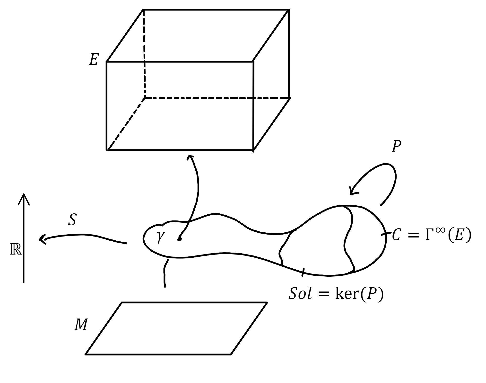

Working Group on Diffeological Structures in Kinematic Configuration Spaces for Classical Field Theories.
| Reading Seminar 10 hours |
| Marco Valerio D'Agostino (INSA - Lyon ) |
| Alessandra Frabetti (ICJ - Lyon ) |
| Antonio Michele Miti (Sapienza - Rome ) |

| Where: | Institut Camille Jordan
Bâtiment Jean Braconnier 21, avenue Claude Bernard, 69100 VILLEURBANNE |
| Room: | Seminaire 1 (sous-sol) and Room 112 (first floor) |
| When: | Autumn 2024 |
| Contacts |
marco [dash] valerio [dot] dagostino [at] insa [dash] lyon [dot] fr
antoniomichele [dot] miti [at] uniroma1 [dot] it |
This working group aims to establish foundational knowledge in the smooth structures of section spaces within smooth bundles, approached through the lens of diffeology.
We will use Christian Blohmann's publicly accessible lecture notes on Lagrangian Field Theories as our primary reference text.
Each session will feature an in-person lecture by a designated speaker, who will present a specific section from the reference material.
Participants are encouraged to review the assigned sections in advance, as detailed in the syllabus below.
Main Text
-
C. Blohmann , Lecture notes on Lagrangian Field Theories, https://people.mpim-bonn.mpg.de/blohmann/LFT/.
Bibliography
-
J. C. Baez, A. E. Hoffnung , Convenient categories of smooth spaces, Transactions of the American Mathematical Society. 2011 ; Vol. 363, No. 11. pp. 5789--5825. https://doi.org/10.1090/S0002-9947-2011-05107-X. -
P. Iglesias-Zemmour, Y. Karshon, M. Zadka , Orbifolds as diffeologies, Transactions of the American Mathematical Society. 2010 ; Vol. 362, No. 6. pp. 2811-2831. https://doi.org/10.1090/S0002-9947-10-05006-3. -
S. Gürer, P. Iglesias-Zemmour , Orbifolds as stratified diffeologies, Differential Geometry and its Applications, Volume 86, 2023, 101969, ISSN 0926-2245, https://doi.org/10.1016/j.difgeo.2022.101969.
Syllabus
| Wed 6/11/24
Seminaire 1 ICJ, sous-sol 10:30-12:00 |
Introduction
Motivation derived from classical field theory, classical notion of diffeological spaces with plots. Speaker: D'Agostino [C.Blohmann, section 1] |
| Mon 25/11/24
Room 112 ICJ 14:30-16:00 |
Entreplots or Singular fiber bundles
We will see in this talk a diffeological space where differential calculus seems possible, this is the case of "Entreplots". Examples are singular algebroids and the holonomy groupoid of singular foliations. Speaker: Garmendia |
| Tue 26/11/24
Seminaire 1 ICJ, sous-sol 10:30-12:00 |
Diffeological spaces as concrete sheaves
Sites, sheaves, concrete sheaves, categorical properties of diffeological spaces. Speaker: Miti [C.Blohmann, section 2.1] [Lecture notes] [Source] |
| Thu 5/12/24 Seminaire 1 ICJ, sous-sol 14:00-15:30 |
Orbifold Stratification in the Context of Diffeological Spaces
Stratified spaces, singularities, orbifolds and their diffeological spaces. Speaker: Nguyên [Gürer, Iglesias-Zemmour] [Lecture notes] |
| Wed 11/12/24 Seminaire 1 ICJ, sous-sol 14:00-15:30 |
Diffeological tangent functor
Colimits, Kan extensions, tangent functors. Speaker: Frabetti [C.Blohmann, section 2.2] [Lecture notes] |